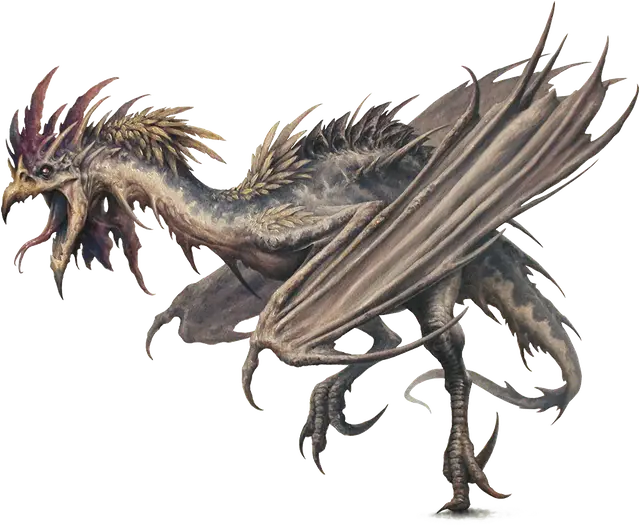

Куролиск
Cockatrice
Маленький Монстр, без мировоззрения

Класс Доспеха 11
Хиты 27 (6к6 + 6)
Скорость 20 футов, летая 40 футов
| мод | спас | ||
|---|---|---|---|
| СИЛ | 6 | −2 | −2 |
| ЛОВ | 12 | +1 | +1 |
| ТЕЛ | 12 | +1 | +1 |
| мод | спас | ||
|---|---|---|---|
| ИНТ | 2 | −4 | −4 |
| МДР | 13 | +1 | +1 |
| ХАР | 5 | −3 | −3 |
Чувства тёмное зрение 60 футов, пассивное Восприятие 11
Опасность 1/2 (100 опыта)
Бонус мастерства +2
Среда обитания Луг
Действия
Укус. Рукопашная атака оружием: +3 к попаданию, досягаемость 5 футов, одно существо. Попадание: Колющий урон 3 (1к4 + 1), и цель должна преуспеть в спасброске Телосложения Сл 11, чтобы не превратиться магическим образом в камень. При провале существо начинает превращаться в камень и становится опутанным. Оно должно повторить этот спасбросок в конце своего следующего хода. При успехе эффект заканчивается. При провале существо становится окаменевшим на 24 часа.
Описание
Куролиск выглядят как отвратительная помесь ящерицы, птицы и летучей мыши, и они печально известны своей способностью превращать плоть в камень. Рацион этих всеядных существ включает в себя ягоды, орехи и цветы, а также небольших живых существ, вроде насекомых, мышей и лягушек — таких, которых они могут проглотить целиком. Они не представляли бы собой угрозу, если бы не их яростная и бешеная реакция при малейшем намеке на опасность. Куролиск летит навстречу любой угрозе, пронзительно кричит и бешено машет крыльями, в то же время, нанося стремительные удары клювом. Малейшая царапина, нанесённая куролиском, может стать роковой, так как его жертва медленно превращается в камень из-за полученного урона.